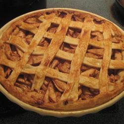

Best Ever Pie Crust

You can double or half the recipe without any problem. This is a simple recipe and very tasty! It will be very flaky.
Ingredients
- 2 cups all-purpose flour
- 1 teaspoon salt
- 1 cup shortening
- ½ cup water
Steps
- In a large bowl, combine flour and salt. Cut in shortening until mixture resembles coarse crumbs. Stir in water until mixture forms a ball. Divide dough in half, and shape into balls. Wrap in plastic, and refrigerate for 4 hours or overnight.
- Roll out dough on a floured counter. Don't over work it. Use as directed in pie recipe.
Notes
If necessary, use a little less water than called for in recipe.